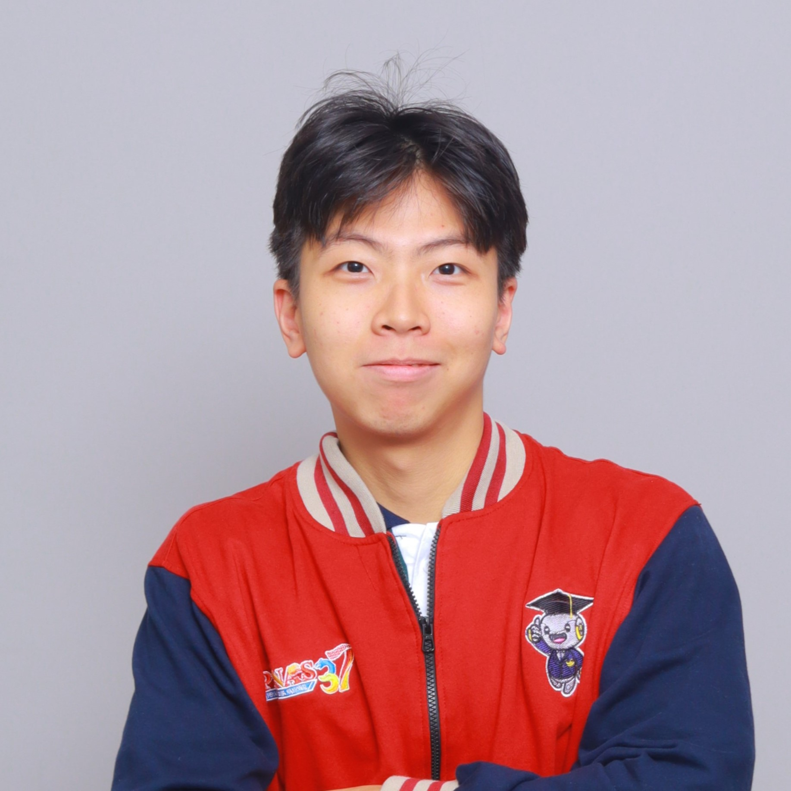
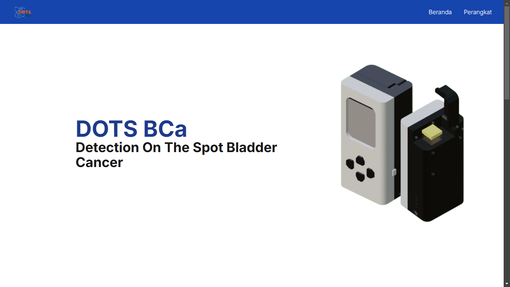
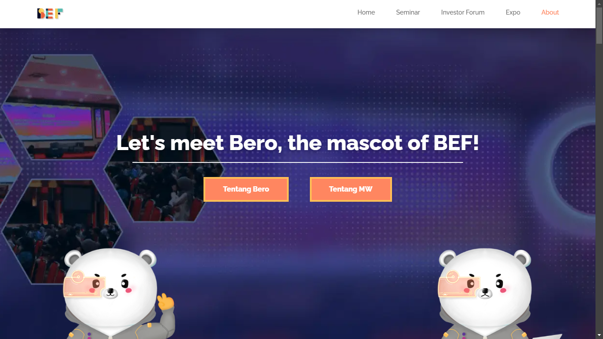

hEllO
wOrlD!
I'm Evan Tan, an engineer
About Me
Hey there! I’m Evan, a 3rd-year Computer Engineering student who can’t seem to pick just one thing to love—so I explore AI, Physics, and all things tech. I enjoy figuring out how stuff works and occasionally getting lost in deep tech rabbit holes. Let’s create something awesome together!
THE JOURNEY
How my journey in the world of computers began, how it has been, and the skills I picked up along the way
Dec 2021
It all started here. When I decided to give Computer Science a try through Harvard's CS50x, an introductory course on the topic. And boy, I completely fell in love with it.
2022
Then, I wanted to take this serious by going to university.
Took Computer Engineering because I wanted to explore both hardware and software.
And I figured it would be the cheaper option to be facilitated to learn hardware, rather than the latter. LOL!
I also interned at my faculty’s IT division, where I got my first experience messing around with web development.
Learned a bit of everything-frontend, backend, databases, and more.
2023
I thought the concepts and math behind AI are cool, so I decided to take online courses during the holiday.
The courses from Kaggle taught me the practical stuff, and the courses from Andrew Ng cemented the basics and math of ML.
This year too, I landed my first freelance web dev job in May and later took on a volunteer web project in October.
Oh, and I officially became a lab assistant at my faculty’s Robotics & Embedded Systems Lab-which meant more hands-on experience with IoT, microcontrollers, and automation!
2024
2024 was wild. My team built an IoT-based device for early bladder cancer detection and won 2nd place in a national research competition.
I handled the content creation and web development, making sure the device could send and display data on the dashboard properly.
Also had the chance to join an international hackathon in Malaysia, where we proposed a wheeled robot for fruit fly pest control to pass the qualification round.
Fantastic experience, amazing people-I loved every second of it.
2025
Still early in the year, but I’m excited to keep leveling up. One of my goals is to actually finish reading some CS books and implement what I learn. And I just got accepted as an intern at BCA, the biggest private bank in Indonesia-really excited to see where this journey takes me next!
pRojecTs
DOTS BCa Web App
DOTS BCa is an IoT device for early Bladder Cancer detection. The web app is used to receive and display readings from the device. Built using React, Django and SQLite.
linkBEF 2023 Web Site
BEF 2023 is a national entrepreneurship festival held in Brawijaya University. The site serves as a digital profile for the event. Built using React and deployed with Netlify.
link